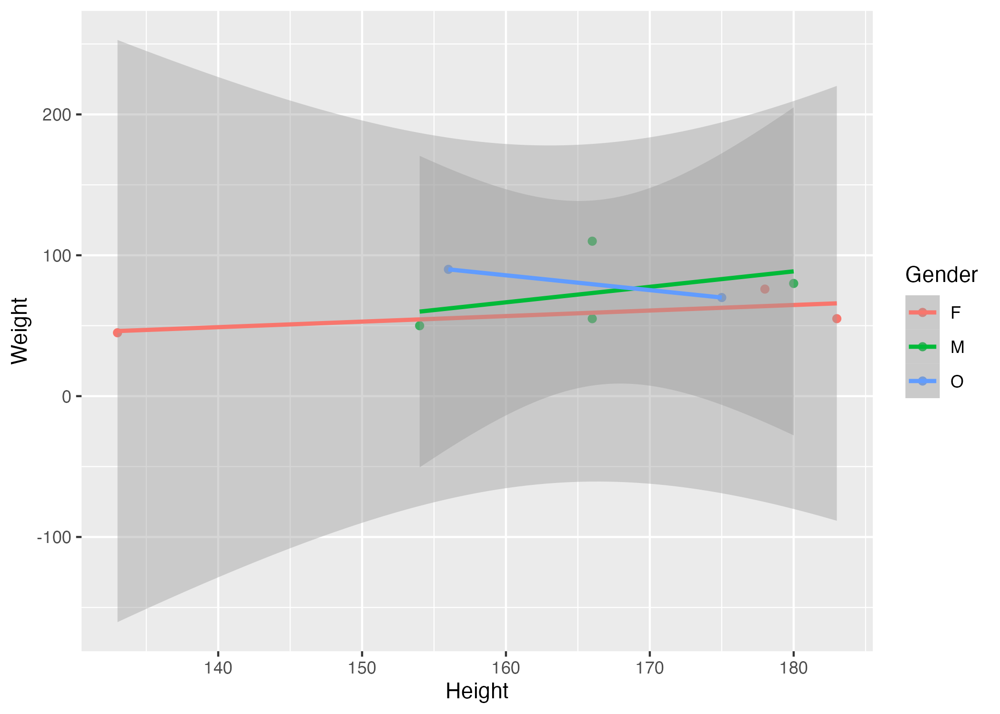

| skim_type | skim_variable | n_missing | complete_rate | factor.ordered | factor.n_unique | factor.top_counts | numeric.mean | numeric.sd | numeric.p0 | numeric.p25 | numeric.p50 | numeric.p75 | numeric.p100 | numeric.hist |
|---|---|---|---|---|---|---|---|---|---|---|---|---|---|---|
| factor | Gender | 0 | 1 | FALSE | 3 | M: 4, F: 3, O: 2 | NA | NA | NA | NA | NA | NA | NA | NA |
| numeric | Height | 0 | 1 | NA | NA | NA | 165.66667 | 15.97655 | 133 | 156 | 166 | 178 | 183 | ▂▁▃▃▇ |
| numeric | Weight | 0 | 1 | NA | NA | NA | 70.11111 | 21.24526 | 45 | 55 | 70 | 80 | 110 | ▇▂▃▂▂ |
Manuscript/Report Template for a Data Analysis Project
1 Summary/Abstract
*Summary will be finalized in later part of project
2 Introduction
2.1 General Background Information
*more background information will be added later, I will describe what diabetes is, what are the notable influences on diagnosis, and what the dataset provides in relation to other studies on diabetes diagnosis.
2.2 Description of data and data source
This dataset comes from UC Irvine Machine Learning Repository. This data has been gathered and processed from the CDCs website in 2014. This dataset includes over 250,000 instances (observations) and 21 features, ranging from personal information (income/education) to health history (drinking/smoking/physical health). Bellow are the features and there respective descriptions
| Feature | Description |
|---|---|
| ID | Patient ID |
| Diabetes_binary | 0 = no diabetes 1 = prediabetes or diabetes |
| HighBP | 0 = no high BP 1 = high BP |
| HighChol | 0 = no high cholesterol 1 = high cholesterol |
| CholCheck | 0 = no cholesterol check in 5 years 1 = yes cholesterol check in 5 years |
| BMI | Body Mass Index |
| Smoker | Have you smoked at least 100 cigarettes in your entire life? [Note: 5 packs = 100 cigarettes] 0 = no 1 = yes |
| Stoke | (Ever told) you had a stroke. 0 = no 1 = yes |
| HeartDiseaseorAttack | coronary heart disease (CHD) or myocardial infarction (MI) 0 = no 1 = yes |
| PhysActivity | physical activity in past 30 days - not including job 0 = no 1 = yes |
| Fruits | Consume Fruit 1 or more times per day 0 = no 1 = yes |
| Veggies | Consume Vegetables 1 or more times per day 0 = no 1 = yes |
| HvyAlchoholConsump | Heavy drinkers (adult men having more than 14 drinks per week and adult women having more than 7 drinks per week) 0 = no 1 = yes |
| AnyHealthcare | Have any kind of health care coverage, including health insurance, prepaid plans such as HMO, etc. 0 = no 1 = yes |
| NoDocbcCost | Was there a time in the past 12 months when you needed to see a doctor but could not because of cost? 0 = no 1 = yes |
| GenHlth | Would you say that in general your health is: scale 1-5 1 = excellent 2 = very good 3 = good 4 = fair 5 = poor |
| MentHlth | Now thinking about your mental health, which includes stress, depression, and problems with emotions, for how many days during the past 30 days was your mental health not good? scale 1-30 days |
| PhysHlth | Now thinking about your physical health, which includes physical illness and injury, for how many days during the past 30 days was your physical health not good? scale 1-30 days |
| DiffWalk | Do you have serious difficulty walking or climbing stairs? 0 = no 1 = yes |
| Sex | 0 = female 1 = male |
| Age | 13-level age category (_AGEG5YR see codebook) 1 = 18-24 9 = 60-64 13 = 80 or older |
| Education | Education level (EDUCA see codebook) scale 1-6 1 = Never attended school or only kindergarten 2 = Grades 1 through 8 (Elementary) 3 = Grades 9 through 11 (Some high school) 4 = Grade 12 or GED (High school graduate) 5 = College 1 year to 3 years (Some college or technical school) 6 = College 4 years or more (College graduate) |
| Income | Income scale (INCOME2 see codebook) scale 1-8 1 = less than $10,000 5 = less than $35,000 8 = $75,000 or more |
2.3 Questions/Hypotheses to be addressed
“What are the key health indicators that predict the likelihood of an individual being diagnosed with diabetes?” Specifically, identifying which factors are most strongly associated with diabetes prevalence in the population.
3 Methods
*Analysis methods will be included in later part of project
3.1 Data acquisition
3.1.1 Explain the question to be answered using the data
The main question I would like to answer with this project is “What are the key health indicators that predict the likelihood of an individual being diagnosed with diabetes?”.
3.1.2 What will be your outcome(s) of interest (if any)?
The primary outcome of interest will be whether an individual has been diagnosed with diabetes or not. This outcome will be represented as a binary variable where 1 indicates a diabetes diagnosis and 0 indicates no diabetes.
3.1.3 What (if any) specific predictors will you focus on?
The specific predictors I will focus on are age, gender, BMI, consumption of fruits and vegetables, and frequency of exercise. Although these are the main predictors I will focus on, I’ll also use data analytic techniques to identify which predictors are of importance or have relationships with the response variable.
3.1.4 What relations/patterns are you looking for in the data?
I will look for patterns ad relationships between the predictors and the outcome of diabetes diagnosis. More specifically, I will analyze correlations between individual predictors and the response variable, interaction effects between predictors and the response variable, and predictive models such as logistic regression, decision trees, and machine learning classifiers.
3.2 Data import and cleaning
*To be added in later portion of project
3.3 Statistical analysis
For my analysis, I will first look at the distributions of each variable to identify if the dataset is balanced and outliers. I do not think any data cleaning will need to be done as that was completed when the data was collected from the CDCs website. Next, I will create a correlation matrix to view the correlations between each predictor and the response variable. After viewing the correlations, I will then use simple linear regression and random forest models to identify variables of importance, these variables will be noted and used later during the modeling phase. I will then split the data set into a training and test set using a 80/20 split and begin the modeling phase. This section will be filled out more once we are further into the class and have discussed more approaches/methods.
* Any section past results has not been modified yet. I only completed the sections required for the first part. Im leaving the template info so I know what needs to be filled in later
4 Results
4.1 Exploratory/Descriptive analysis
*To be added in later portion of project
Use a combination of text/tables/figures to explore and describe your data. Show the most important descriptive results here. Additional ones should go in the supplement. Even more can be in the R and Quarto files that are part of your project.
Table 1 shows a summary of the data.
Note the loading of the data providing a relative path using the ../../ notation. (Two dots means a folder up). You never want to specify an absolute path like C:\ahandel\myproject\results\ because if you share this with someone, it won’t work for them since they don’t have that path. You can also use the here R package to create paths. See examples of that below. I recommend the here package, but I’m showing the other approach here just in case you encounter it.
4.2 Basic statistical analysis
*To be added in later portion of project
To get some further insight into your data, if reasonable you could compute simple statistics (e.g. simple models with 1 predictor) to look for associations between your outcome(s) and each individual predictor variable. Though note that unless you pre-specified the outcome and main exposure, any “p<0.05 means statistical significance” interpretation is not valid.
Figure 1 shows a scatterplot figure produced by one of the R scripts.

4.3 Full analysis
*To be added in later portion of project
Use one or several suitable statistical/machine learning methods to analyze your data and to produce meaningful figures, tables, etc. This might again be code that is best placed in one or several separate R scripts that need to be well documented. You want the code to produce figures and data ready for display as tables, and save those. Then you load them here.
Example Table 2 shows a summary of a linear model fit.
| term | estimate | std.error | statistic | p.value |
|---|---|---|---|---|
| (Intercept) | 149.2726967 | 23.3823360 | 6.3839942 | 0.0013962 |
| Weight | 0.2623972 | 0.3512436 | 0.7470519 | 0.4886517 |
| GenderM | -2.1244913 | 15.5488953 | -0.1366329 | 0.8966520 |
| GenderO | -4.7644739 | 19.0114155 | -0.2506112 | 0.8120871 |
5 Discussion
5.1 Summary and Interpretation
*To be added in later portion of project
Summarize what you did, what you found and what it means.
5.2 Strengths and Limitations
*To be added in later portion of project
Discuss what you perceive as strengths and limitations of your analysis.
5.3 Conclusions
*To be added in later portion of project
What are the main take-home messages?
Include citations in your Rmd file using bibtex, the list of references will automatically be placed at the end
This paper (Leek & Peng, 2015) discusses types of analyses.
These papers (McKay, Ebell, Billings, et al., 2020; McKay, Ebell, Dale, Shen, & Handel, 2020) are good examples of papers published using a fully reproducible setup similar to the one shown in this template.
Note that this cited reference will show up at the end of the document, the reference formatting is determined by the CSL file specified in the YAML header. Many more style files for almost any journal are available. You also specify the location of your bibtex reference file in the YAML. You can call your reference file anything you like, I just used the generic word references.bib but giving it a more descriptive name is probably better.
6 References
Leek, J. T., & Peng, R. D. (2015). Statistics. What is the question? Science (New York, N.Y.), 347(6228), 1314–1315. https://doi.org/10.1126/science.aaa6146
McKay, B., Ebell, M., Billings, W. Z., Dale, A. P., Shen, Y., & Handel, A. (2020). Associations Between Relative Viral Load at Diagnosis and Influenza A Symptoms and Recovery. Open Forum Infectious Diseases, 7(11), ofaa494. https://doi.org/10.1093/ofid/ofaa494
McKay, B., Ebell, M., Dale, A. P., Shen, Y., & Handel, A. (2020). Virulence-mediated infectiousness and activity trade-offs and their impact on transmission potential of influenza patients. Proceedings. Biological Sciences, 287(1927), 20200496. https://doi.org/10.1098/rspb.2020.0496